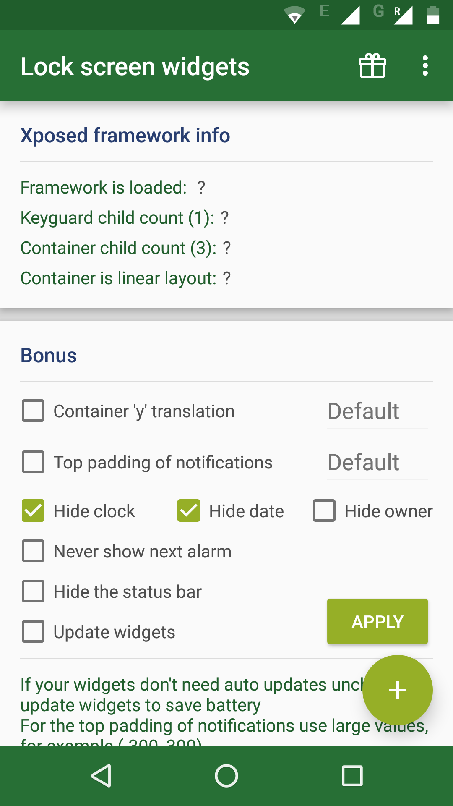
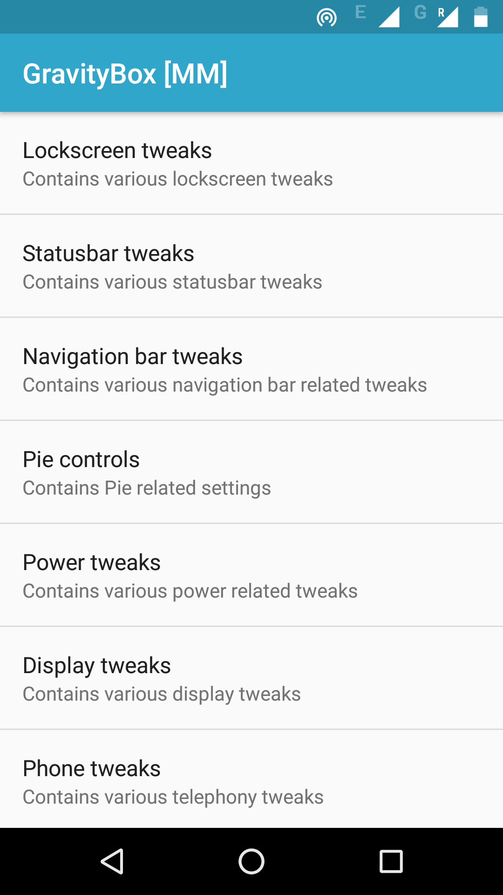
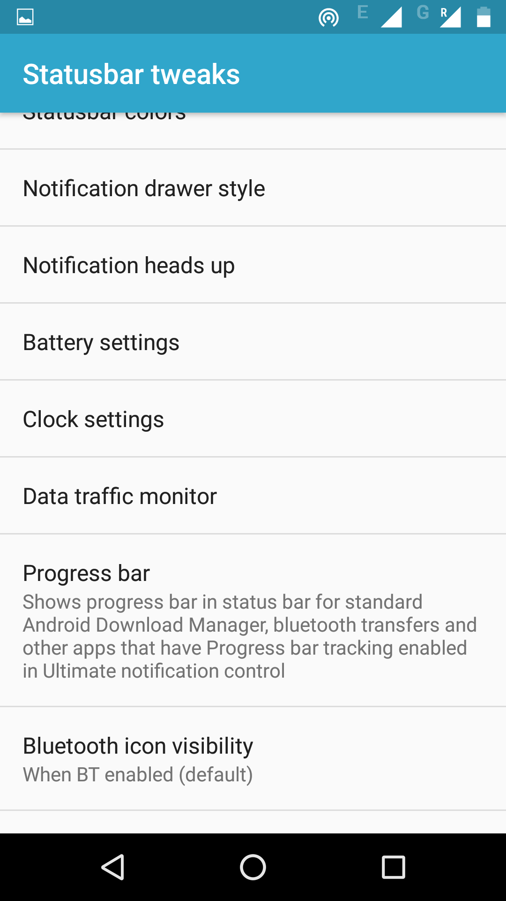
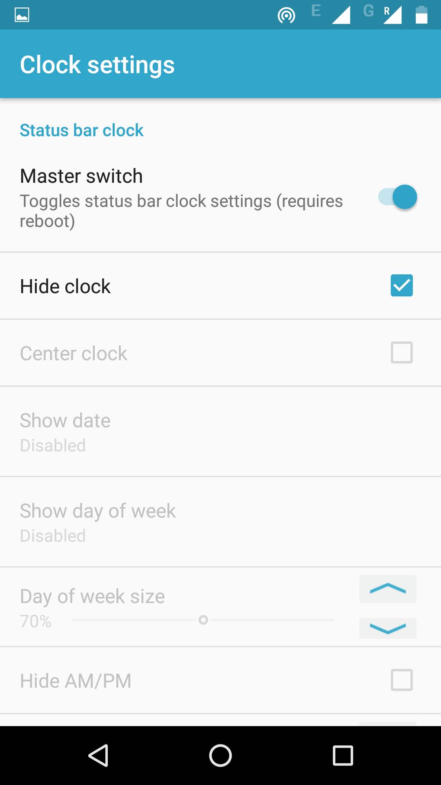
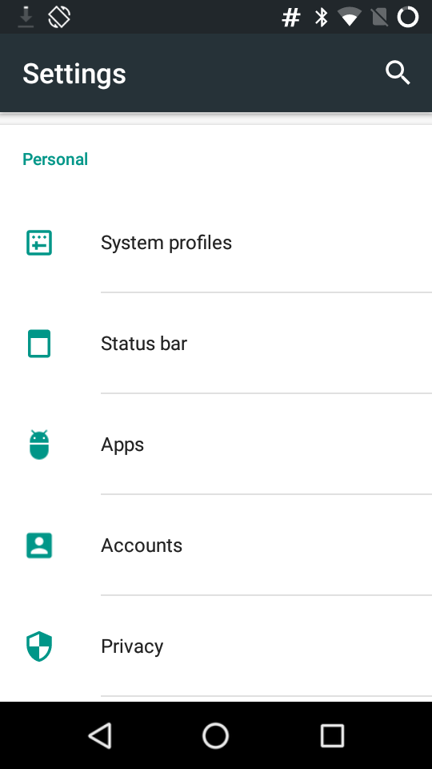
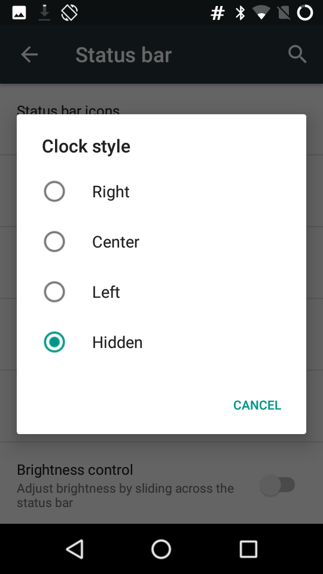
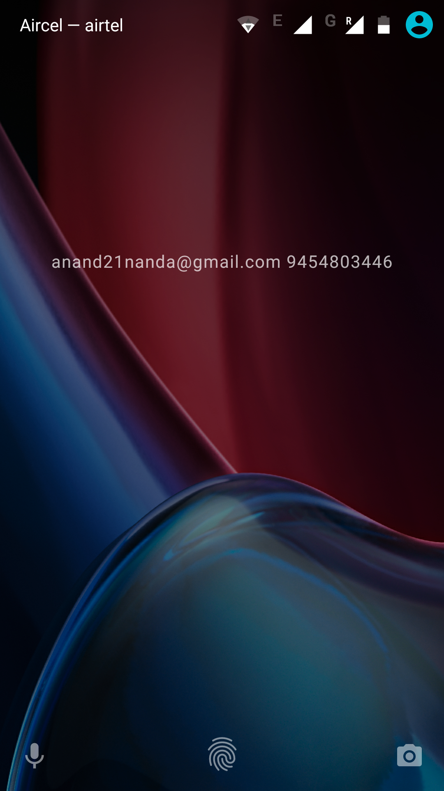

Remove Clock From LockScreen/StatusBar On Android
I have been living without time from a few years and it is a bliss. I have removed time from my laptop. For android mobile, I couldn't find a reliable way to remove time and I used to change timezone to a random zone. With Xposed framework we can remove clock from lock screen and status bar.
Before proceeding, make sure your phone is rooted and Xposed framework is installed.
Remove Clock From LockScreen
To remove clock from lockscreen, download Lock screen widgets module and activate it.
If you open it, it has an option to hide date and time.

Remove Time From StatusBar
To remove clock from status bar, you have to install GravityBox. Open GravityBox and goto statusbar settings



If you are already using CyanogenMod, there is an option to hide time in settings.


Once you do this, you will have a neat lockscreen without any time on it.

Comments
Comments powered by Disqus